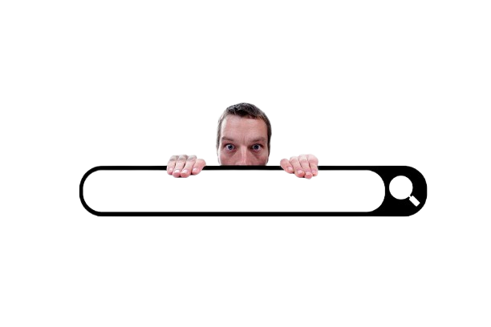

Mi Objetivo
Razones para trabajar conmigo
Más allá de la implementación técnica, me dedico a forjar relaciones de confianza y a entregar soluciones reales.
Experiencia en WordPress
Creando sitios optimizados y automatizados, aprovechando al máximo las capacidades de la plataforma.
Evolución Constante
Como ingeniero autodidacta no me ato a una sola herramienta, sigo aprendiendo y mejorando mis habilidades.
Colaboración Auténtica
Escucho tus necesidades y adapto cada detalle para que tu proyecto sea único y exitoso.
Comunicación Transparente
Te mantengo informado en cada etapa, garantizando claridad y confianza en el proceso.
Visibilidad y Velocidad
Sitios diseñados para destacar en buscadores y ofrecer una experiencia ágil a tus visitantes.

Soporte Post-Lanzamiento
Mi compromiso continúa tras la entrega del proyecto, te acompaño en el mantenimiento técnico para mantener tu web siempre al día.
Resultados Comprobados
La satisfacción de mis clientes respalda mi compromiso con la calidad y la excelencia.
Ahora que conoces cómo diseño soluciones,
¡Hablemos de tu proyecto!